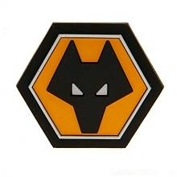
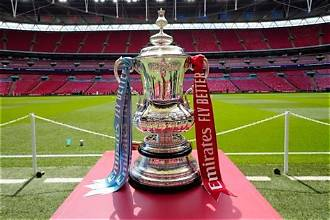

O Wolverhampton Wanderers FC (conhecido como Wolves) é um clube famoso do futebol inglês. O seu símbolo é um lobo e a equipa joga no Estádio Molineux com camisolas amarelas e calções pretos. Já ganhou 3 Ligas Inglesas e 4 Taças de Inglaterra. Nos últimos anos, ficou muito conhecido por ter muitos jogadores e treinadores de Portugal.
O símbolo do clube tem a cabeça de um lobo. As cores principal são o amarelo e o preto.


| Posição | Nome | Idade | Nacionalidade |
|---|---|---|---|
| Guarda-Redes | José Sá | 33 | Portugal |
| Defesa Direito | Jackson Tchatchoua | 25 | Camarões |
| Defesa Central | Nasser Djiga | 23 | Burkina Faso |
| Defesa Central | Toti Gomes | 27 | Portugal |
| Defesa Esquerdo | Hugo Bueno | 24 | Espanha |
| Médio Defensivo | André | 25 | Brasil |
| Médio Centro | Marshall Munetsi | 30 | Zimbabué |
| Médio Ofensivo | Fer López | 22 | Espanha |
| Extremo Direito | Rodrigo Gomes | 23 | Portugal |
| Extremo Esquerdo | Mateus Mané | 19 | Inglaterra/Portugal |
| Avançado Centro | Adam Armstrong | 29 | Inglaterra |